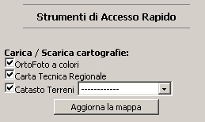
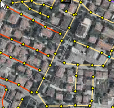
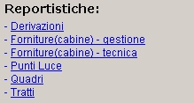

|
Il check box spuntato significa che la cartografia per quel dataset è caricata e visibile. Nel caso in cui non tutti i temi di quel gruppo sono caricati, si ha un check box grigio ad indicare il non completo stato di caricamento. |
|  |
L'utente può caricare/scaricare i temi di un dataset semplicemente cliccando sul check box e aggiornando la mappa.
Cliccando sulla i a lato, invece, è possibile visualizzare tutte le informazioni relative a quel layer. N.B. In questa pagina si dispone solo di alcuni gruppi di layers. Il set completo di temi è disponibile nella pagina del GeoCatalogo. |
|  |
Report Per visualizzare le informazioni in formato stampabile, è sufficiente selezionare sulla mappa gli oggetti interessati e scagliere il report.  |
|
|
Un apposito combo box permette di selezionare il tipo di ricerca. Immettendo una parola chiave e cliccando sull'icona di ricerca, l'applicazione effettua lo zoom sulla mappa o mostra la lista degli oggetti corrispondenti al criterio inserito dall'utente. |